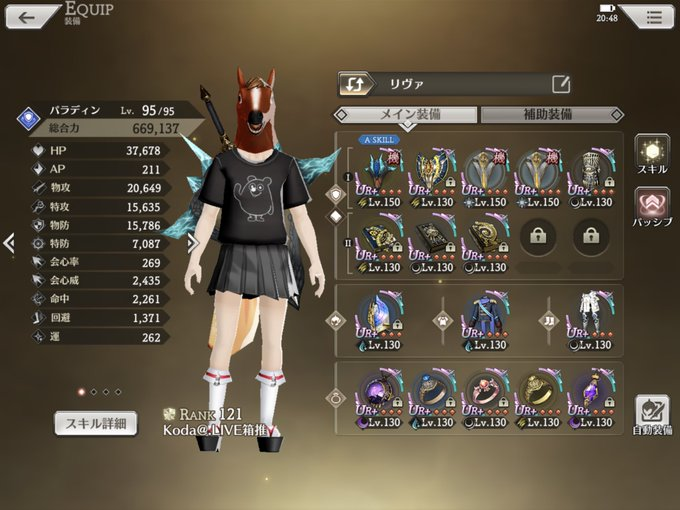
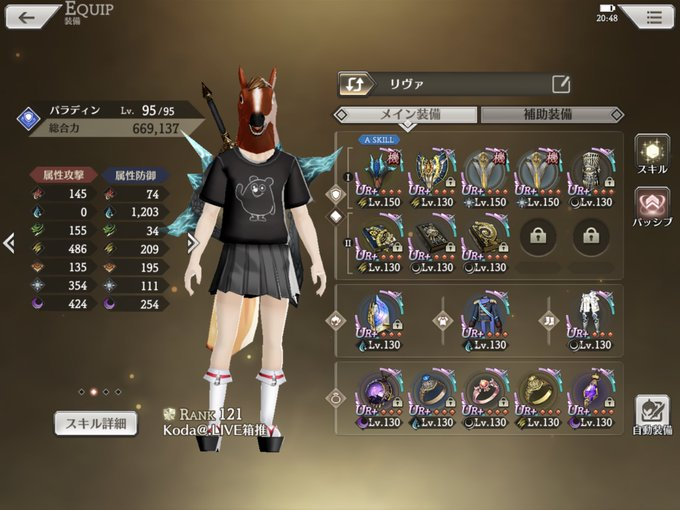
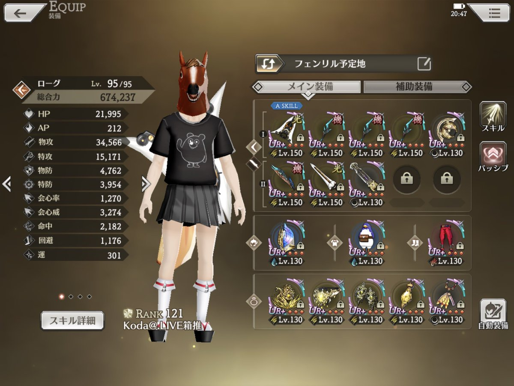
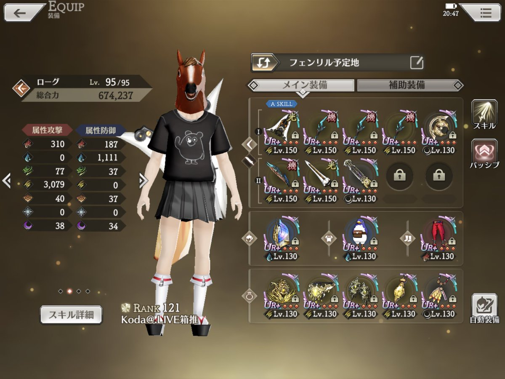

フェンリルのステータス
| HP |
弱点属性 |
耐性属性(ガード) |
耐性属性(ブロック) |
耐性属性(吸収) |
60,892,436 |
雷属性 |
火属性・水属性 |
- |
- |
攻略のコツ
回避が高いので命中を上げよう！ザル刃ありで2000、なしで2400ぐらい？
防御が高いので、攻撃力を3万以上にしよう！4万以上にすれば非覚醒時のダメも出る！？
攻撃が痛いので水属性防御を上げよう！1000あっても死ぬときは死ぬ！
攻略例
グラディエーター
装備：xxx
ステータス：xxx
立ち回り：xxx
パラディン
☆装備☆
 
火力が高いので、水属性防御よりも物防を上げることを優先しています。
また、技があまり打てないため、ヘイトを高めるアクセとパッシブを装備
☆立ち回り☆
覚醒前にザル盾のスキルを使う事、ヘイト盾を使いすぎない事、
キラーと範囲攻撃に会心無効を入れることを意識しています。
（開始直後～）
のんびりタイムです。ヘイトを稼ぎつつソウルも稼ぎます。
（味方覚醒～敵覚醒まで）
雷本はスキル開始時にターゲットが決まるので、敵の攻撃受けてから撃ってます
味方の攻撃強いとすぐ敵覚醒しちゃうので、最初にザル盾入れてます
バフとしてスキルパワーを入れてますが、ここは味方に合わせましょう
敵覚醒ぐらいでヘイト技撃ってると、敵の覚醒後半でもう１度打ててリキャ的にいいです。
（敵覚醒後序盤～中盤）
飛び立ったぐらいに会心封印入れると全体⇒キラー⇒全体の全てに会心封印がつきます。
だいたい失敗します。
（敵覚醒後終盤）
ソウル稼ぎつつ、ヘイトとりつつ、会心無効いれつつ。
装備によりますが、1,2回Aキャンいれないとまわらないかも
（２回目の敵覚醒序盤）
１回目と同じ感じ_(:3」∠)
ローグ
☆装備☆
 
ダメ割合UPよりも物理攻撃を上げるのを優先しています。
また、属性防御1000だけではクリで死ぬので、胴とネックレスでHPを底上げしています。
☆立ち回り☆
覚醒前にバフと、デバフを入れる事を意識。
覚醒中は常にAキャンでダメを稼ぎつつ、スキルが回るようにしてます。
また、敵覚醒に入る前に、ザル剣のスキルを使い凍結予防しています。
（開始直後～）
全力でソウル稼ぎ
（味方覚醒前～）
覚醒時にすぐ火力を出せるように、バフ、デバフを盛っていく
ザル剣も早めに撃っとく
（覚醒中）
全部Aキャン。
バフが切れるあたりで、シュネル剣で再バフ